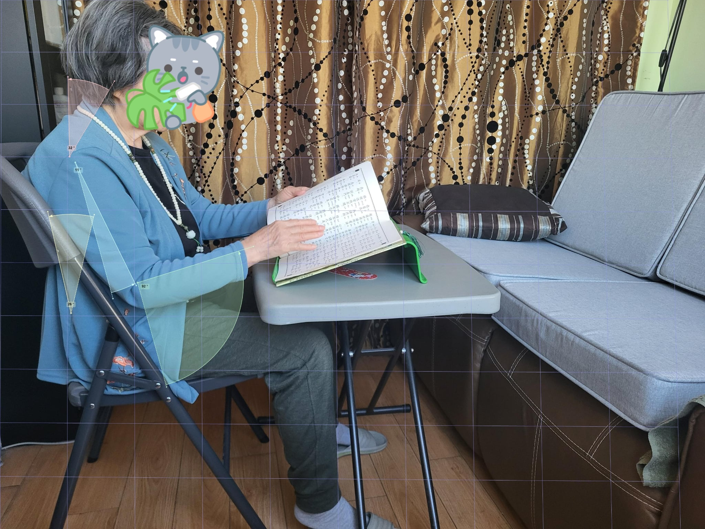
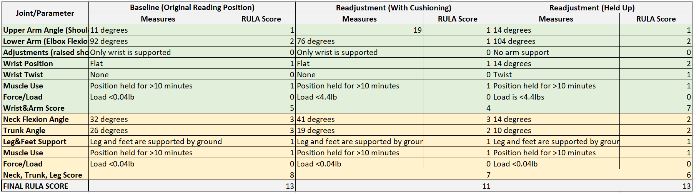
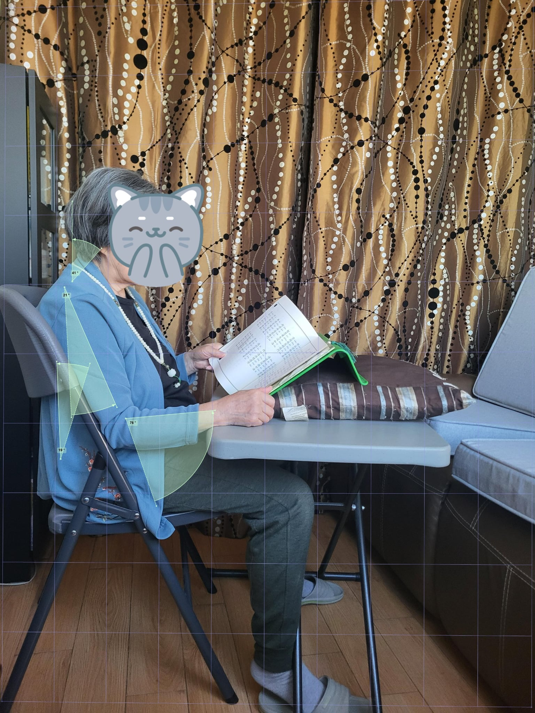
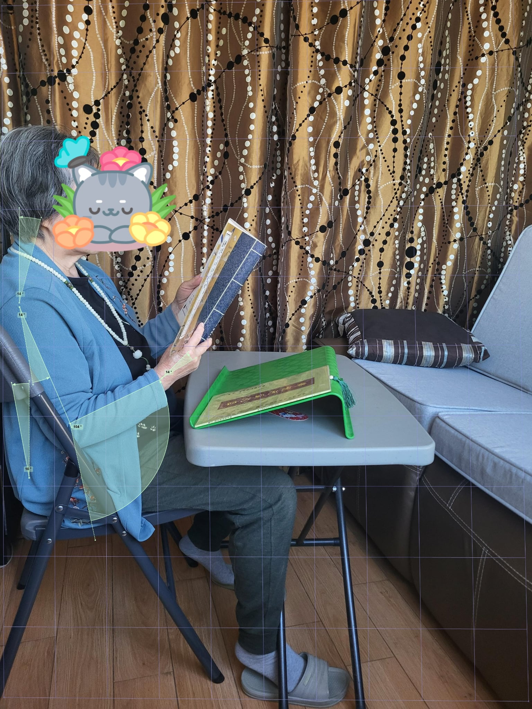

Position 1
Original Position
My grandmother's usual reading position with the furniture available to her. This served as the baseline for comparison.
A physical ergonomics assessment comparing three reading positions using the Rapid Upper Limb Assessment (RULA) framework to identify potential postural concerns and explore a more comfortable reading set-up.
My grandmother left her dedicated book stand at my aunt's place, so she had to adapt to the furniture available at her current location. Although she reported feeling comfortable in her new reading position, I wondered whether the set-up could contribute to postural strain over time.
I used a structured ergonomic assessment to examine her usual reading position alongside two alternatives. The goal was to explore practical adjustments that could improve the set-up while keeping it simple and functional.
I assessed the three reading positions using the Rapid Upper Limb Assessment (RULA), a method for screening postures associated with potential musculoskeletal risk. In my comparison, Position 2 received the lowest RULA score.
While my grandmother waits to retrieve her book stand, Position 2—with pillow support—is my preferred alternative based on the assessment results. This is a preliminary recommendation for this specific set-up, rather than a guarantee of long-term comfort or safety.

RULA score comparison across the three reading positions.
Interpretation note: RULA is a screening tool for posture-related risk, not a direct measurement of comfort or long-term health outcomes. The results should be interpreted alongside the individual's feedback and the limitations of a single-person assessment.
Each position represents a different way of supporting the book and the upper body. Comparing them helped me explore how small changes in support and arm positioning might influence posture.

My grandmother's usual reading position with the furniture available to her. This served as the baseline for comparison.

An alternative that introduces pillow support to change the way the upper body and arms are supported during reading.
Lowest RULA score in this comparison
An alternative in which she holds the book up rather than resting it on the existing reading surface.
This project gave me an opportunity to apply ergonomic assessment methods to an everyday activity. It also reinforced the importance of looking beyond reported comfort alone: a person may feel comfortable in a position without that feeling necessarily reflecting every aspect of their posture.
The next step would be to consider my grandmother's own feedback alongside the assessment, observe how sustainable each position feels over a longer reading session, and revisit the set-up once her book stand is available.